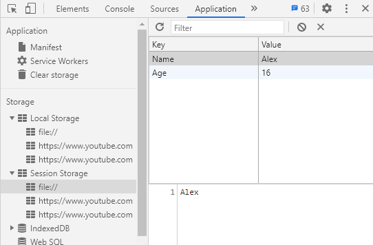

In this section, I'm gonna talk about composition and inheritance knowing the difference between the two will help you write better code, and in my opinion composition is more flexible, and should be prefered, when you are writing complex code at least, and I'm gonna explain why now. First, let's look at a simple example of inheritance:
JavaScript Code:
let monster = class{ constructor(n){ this.name = n; } attack(){ document.write(`${this.name} attacked`); } walk(){ document.write(`${this.name} walked`); } die(){ document.write(`${this.name} died`); } } let swimingMonster = class extends monster{ swim(){ document.write(`${this.name} swam`) } } let flyingMonster = class extends monster{ fly(){ document.write(`${this.name} flew`) } } let shark = new swimingMonster("Shark"); let eagle = new flyingMonster("Eagle"); shark.attack(); document.write(`<br>`) shark.swim(); document.write(`<br>`) eagle.fly(); document.write(`<br>`) eagle.die();
Outcome:
At first, it seems like classes work pretty fine for what we are trying to make, however, what would you do if you wanted to make a new flying_swimmingMonster class that contains both swim and fly methods? You would have to rewrite the methods, and that takes space and time, that's where composition could be better to use.
JavaScript Code:
let canWalkAndTalk = function({ name }){ return { walk(){ document.write(`${name} walked`) }, attack(){ document.write(`${name} attacked`) } } } let swimmer = function({ name }){ return { swim(){ document.write(`${name} swam`) } } } let canFly = function({ name }){ return { fly(){ document.write(`${name} flew`) } } } let SwimingMonsterCreator = function(name){ let monster = {name: name} return { ...monster, ...canWalkAndTalk(monster), ...swimmer(monster), ...canFly(monster) } } let weird_fish = SwimingMonsterCreator("Flying fish with legs"); weird_fish.walk(); document.write(`<br>`) weird_fish.fly(); document.write(`<br>`) weird_fish.swim();
Outcome:
So, let me do the explaining now, first of all, you need to be familiar with the spread operator and object destructuring.
Using spread operator you can add all the properties and values of an object to another object:
JavaScript Code:
let person = {name: "alex", age: 15} let animal = {color: "white", legs: 4}; let example = {...person, ...animal}; document.write(`${example.color} ${example.age}`)
Outcome:
With object destructuring we can take an object and create a variable of a wanted property of the object, here is an example:
JavaScript Code:
let obj = {name: "Alex", age: 15}; let {name} = obj; let {age, name: name2} = obj; document.write(name2, name, age);
Outcome:
I have talked more about ES6 destructuring in one of the previous lessons, and about spread operator, so I recommend you go check these out if needed.
I will explain the code now, the SwimingMonsterCreator has a name parameter, this name parameter creates the name: name object, then it returns a new object, using spread operators you can add and remove objects easily, the objects that contain the function methods are returned by functions, which functions take a parameter, I have used destructuring syntax to that parameter, so when you write swimer(monster) it creates a name variable of the object name: name that was created before, which then is used inside the method that is added using the spread operator, anyway, I will now try to remake the first code I wrote at the start of the section using only functions:
JavaScript Code:
let basic_skills = function({ name }){ return { attack(){ document.write(`${name} attacked`); }, walk(){ document.write(`${name} walked`); }, die(){ document.write(`${name} died`); } } } let fly_skill = function({ name }){ return{ fly(){ document.write(`${name} flew`); } } } let swim_skill = function({ name }){ return{ swim(){ document.write(`${name} swam`); } } } let swim_monster = function(name){ let monster = {name: name}; return { ...monster, ...basic_skills(monster), ...swim_skill(monster) } } let fly_monster = function(name){ let monster = {name: name}; return { ...monster, ...basic_skills(monster), ...fly_skill(monster) } } let shark = swim_monster("Shark"); let eagle = fly_monster("Eagle"); shark.attack(); document.write(`<br>`) shark.swim(); document.write(`<br>`) eagle.fly(); document.write(`<br>`) eagle.die();
Outcome:
I don't know about you but I like this syntax way more, you have all monster skills prodefined, and whenever you want to define a new monster you just add the skills you want, it's simple, and this way you don't need to rewrite the methods.
The array slice() method selects elements from an array:
JavaScript Code:
let arr = [0, 1, 2, 3, 4] let sliced_arr = arr.slice(1, 4); document.write(sliced_arr);
Outcome:
The slice() method returns the selected elements of an array as a new array object without changing the original array. The first parameter defines the beginning and the second parameter the end, however, it ending element is not included in the new array.
The slice() method can also be used on strings:
JavaScript Code:
let string = "Red Pink Blue"; let pink = string.slice(4,8); document.write(pink);
Outcome:
The replace() method can be used to replace a chosen part of a string with a new one:
JavaScript Code:
let string = "I don't know JavaScript, and I don't know PHP."; let string2 = string.replace("don't know", "know"); document.write(string2);
Outcome:
As you can see, it only replaced the first match it found, to replace the second match I would have to use the method again.
In this section I'm gonna talk about how you can create daggable elements. Doing so can be pretty easy, as long as what you are willing to create is simple, but it can get a little more complicated, and you will see why later in the section, for now let's start with something simple, the first thing you need to do to make an element draggable is to add the draggable="true" attribute inside it:
HTML Code:
<div class="container"> <div class="draggable" draggable="true">1</div> <div class="draggable" draggable="true">2</div> </div> <div class="container"> <div class="draggable" draggable="true">3</div> <div class="draggable" draggable="true">4</div> </div>
CSS Code:
.container{ background-color: #333; padding: 60px 20px 30px 20px; padding-top: 10px; width: 500px; margin: 10px auto; border: 3px solid black; } .draggable{ background-color: white; border: 3px solid black; padding: 15px; margin-top: 15px; cursor: move; }
Outcome:
So, as you can see, we are already half way there, the elements can already be dragged, they they can't yet be dropped, to allow them to be dropped we are going to need a little JavaScript:
CSS Code:
.draggable.dragging{ opacity: 0.5; }
JavaScript Code:
let elements = Array.from(document.querySelectorAll(".draggable")); let containers = Array.from(document.querySelectorAll(".container")); elements.forEach((elements) => { elements.addEventListener("dragstart", (e) => { elements.classList.add("dragging"); }); elements.addEventListener("dragend", (e) => { elements.classList.remove("dragging"); }) }) containers.forEach((containers) => { containers.addEventListener("dragover", (e) => { e.preventDefault(); const element = document.querySelector('.dragging'); containers.append(element); }) })
Outcome:
Let me explain now, we added dragstart EventListener to all draggable elements that adds dragging class to them whenever they are dragged, this class is used to know which element is dragged later, and it also is used for decoration porpuses. We also added dragend EventListener which removes dragging class after the elements is dropped. For the containers now we added dragover EventListener which will continiously trigger again and again really fast whenever an element is dragged over it, when that happens the element with the dragging class will be appended to it, and the default event listener that would change the cursor to the stop sign will be prevented.
That's cool so far, however, there is a problem, the elements are always appended to the end of the container, what if I wanted to make it so that it can check the cursore position and determine before which element it should be inserted to? To do that you will need to use a little more complicated code:
JavaScript Code:
let elements = Array.from(document.querySelectorAll(".draggable3")); let containers = Array.from(document.querySelectorAll(".container3")); elements.forEach((elements) => { elements.addEventListener("dragstart", (e) => { elements.classList.add("dragging"); }); elements.addEventListener("dragend", (e) => { elements.classList.remove("dragging"); }) }) function getElementAfter(container, y){ const elements = Array.from(container.querySelectorAll('.draggable:not(.dragging)')); return elements.reduce((closest, child) => { const box = child.getBoundingClientRect(); const offset = y - box.top - box.height / 2; if(offset < 0 && offset > closest.offset){ return { offset: offset, element: child}; } else { return closest; } }, { offset: Number.NEGATIVE_INFINITY } ).element; } containers.forEach((containers) => { containers.addEventListener("dragover", (e) => { e.preventDefault(); const elementAfter = getElementAfter(containers, e.clientY); const element = document.querySelector('.dragging'); if(elementAfter == null){ containers.append(element); } else { containers.insertBefore(element, elementAfter); } }) })
Outcome:
Let me explain now, the getElementAfter function continiously loops through the draggable elements inside the container you are dragging over, this loop is continiously made again and again, always returning the element after your cursor, to make that happen, I used reduce array method, this reduce method does the loop through the draggable elements, to make the array however I used .draggable:not(.dragging) CSS selector, so the dragging element is not selected. Anyway, for each draggable element we get it's boudningClientRect, which is an object that contains information such as height and position, we use this object to calculate the offset between the element and our cursor, to do that we simple do our cursor position - element's position, if the element is after our cursor then the result will be negative, else it will be positive, to be more specific, we wanted to calculate the offset between our cursor y position and the y position of the center of the elements, to get the y position of the center of the elements we did top - height/2, therefore, that's why the final calculation of the offset is y - box.top - box.height / 2.
Anyway, so, now, remember how the reduce method works, first we make the closest parameter get an infinity negative value, so that the first child that returns an offset of negative value is always closer to 0 than the first closest.offset, when that happens an object will be returned with the current offset and the current element and it will be assigned to be the closest of the next loop which will check if the next element's offset is negative and if yes then if it's closer to 0 than the current closest, if this returns true then another object will be returned to be the closest with the current offset and element, anyway, this loop takes miliseconds to happen, and at the end the element with the closest to 0 but negative offset is returned to be the value of the elementAfter variable, if your cursor is after all elements only positive offsets will be returned, so reduce(...).element will return null since an object with the element property will not have been returned. All this process continiously happens while the element is being dragged over the container, so even if you see no change while keeping the element at one place, behind the scenese this whole process I'm just explaining happens again and again and the element is appeded at the position you view it again and again, without this being visible seen, unless of course if you move it behind another element which will change the element returned by the reduce method.
I made this section with the help of the following video, I believe it will be easier to understand the code I just wrote above if you first watch this video, since Kyle Cook is a very good teacher and explains it really well, you also will be able to see the code being written in order while he explains what each line does, something I am not able to do here very easily.
Now, there is a problem, drag and drop does not work property for touch screens, in order to make the list usable for touch screens too you will need to use touch events, there isn't one and only way to create the list, there are multiple different ways one can do this, here is my attempt to make that happen:
HTML Code:
<div class="container4"> <div class="draggable4" draggable="false">1</div> <div class="draggable4" draggable="false">2</div> </div> <div class="container4"> <div class="draggable4" draggable="false">3</div> <div class="draggable4" draggable="false">4</div> </div>
CSS Code:
.container4{ background-color: #333; padding: 60px 20px 30px 20px; padding-top: 10px; max-width: 500px; width: 50vw; margin: 10px auto; border: 3px solid black; } .draggable4{ background-color: white; border: 3px solid black; padding: 15px; margin-top: 15px; cursor: move; } .draggable4.dragging{ opacity: 0.5; } .no-scroll{ height: 100vh; overflow: hidden; }
JavaScript Code:
// this makes sure that the code will run only // after the window has fully loaded window.addEventListener('load', (e) => { // this gets the draggable elements // and the two containers let elements = Array.from(document.querySelectorAll(".draggable4")); let containers = Array.from(document.querySelectorAll(".container4")); // function that gets the element next of your cursor/touch function getElementAfter(container, y){ const elements = Array.from(container.querySelectorAll('.draggable4:not(.dragging)')); return elements.reduce((closest, child) => { const box = child.getBoundingClientRect(); const offset = y - box.top - box.height / 2; if(offset < 0 && offset > closest.offset){ return { offset: offset, element: child}; } else { return closest; } }, { offset: Number.NEGATIVE_INFINITY } ).element; } // loop that makes sure all events // created below are added on all // the draggable elements elements.forEach((elements) => { // this sets draggable attribute to true // the reason I didn't have it set to // true from the start is to prevent // possible bugs that can occur, so // that users can only drag the elements // after the window has fully loaded. elements.draggable = "true"; //function that triggers when toucmove event is added //I needed to use a named function so I can remove the //toucmove event later after touchend event triggers function touchmove(e){ let box1 = containers[0].getBoundingClientRect(); let y1 = box1.top + box1.height; let container; let y2 = e.touches[0].clientY; // this finds at which container // the element should be placed, // we then use that container on // getElementAfter function to // get the element after our cursor, // if any, else we just append the // element in the end of the container if(y2 < y1){ container = containers[0]; } else if(y2 > y1){ container = containers[1]; } let elementAfter = getElementAfter(container, y2); if(elementAfter == null){ container.append(elements); } else { container.insertBefore(elements, elementAfter); } } // this triggers when a touch is made elements.addEventListener('touchstart', (e) => { elements.draggable = "false"; // touch should be hold for 1 second before // the element can be moved let timeout = setTimeout(function(){ elements.classList.add('dragging'); document.body.classList.add('no-scroll'); // after you hold a touch for 1 second on // the element then touchmove event is // added to the document, which triggers // the function i made before document.addEventListener('touchmove', touchmove); }, 1000); elements.addEventListener('touchend', (e) => { // after touch ends everything is returned // to normal and the touchmove event is // removed from the document, also // the timout is cleared so if the // touch was not held for 1 second // then the code that was supposed to // trigger after the timeout will not run elements.draggable = "true"; clearTimeout(timeout); elements.classList.remove('dragging'); document.body.classList.remove('no-scroll'); document.removeEventListener('touchmove', touchmove); }) elements.addEventListener('touchcancel', (e) => { // if touch is canceled everything is returned // to normal and the touchmove event is // removed from the document elements.draggable = "true"; clearTimeout(timeout); elements.classList.remove('dragging'); document.body.classList.remove('no-scroll'); document.removeEventListener('touchmove', touchmove); }) }); // drag events, these will not trigger // on mobile, and I make sure they won't // by turning draggable attribute to false // when a touch occurs, because of devices that // support both touch and mouse I also // return the attribute back to true // after the touch ends/cancels // when an element is dragged the dragging // class is added to it, when it is dropped // the dragging class is removed from it elements.addEventListener("dragstart", (e) => { elements.classList.add("dragging"); }); elements.addEventListener("dragend", (e) => { elements.classList.remove("dragging"); }); }); // this adds the dragover event to both // containers, when an element is dragged over // a container it will call the getElementAfter // function which will return the element that's // right after the cursor, if any, else it // will append the element with the draggin class // to the end of the container containers.forEach((containers) => { containers.addEventListener("dragover", (e) => { e.preventDefault(); const elementAfter = getElementAfter(containers, e.clientY); const element = document.querySelector('.dragging'); if(elementAfter == null){ containers.append(element); } else { containers.insertBefore(element, elementAfter); } }); }); });
Outcome:
Let's now talk about how you can store data from a user and save it for later use, something really important, before HTML5 to do so you would have to use cookies or something, since I'm new to web development I don't really know much about this, anyway, from what I studied HTML5 introduced us the localStorage and sessionStorage window objects, and in this section I will go over the different methods they have and ways you can use them.
What's the difference between sessionStorage and localStorage? When data is stored in sessionStorage it only is kept stored for as long as the tab is open, after exiting the website it is removed, while when data is stored in localStorage it is kept stored there even after you leave the website, and can only be removed by the user if he deletes it through the browser settings or it can also be removed by one of the methods that can be used to delete stored data.
Let's try now to store data and see if it gets stored or not, to view the stored data, right click on the browser and press inspect, then go to the application tab and there you can see the localStorage and sessionStorage files, where strings are stored in key, value pairs, remember, the value can only be strings, no objects or arrays can be used, I will talk about how you can do store objects and arrays later using JSON.
JavaScript Code:
window.sessionStorage.setItem("Name", "Alex"); window.sessionStorage.setItem("Age", "16");
Outcome:
There are four methods I know of that can be used for both sessionStorage and localStorage, and these are the following:
Let's create a simple project:
HTML Code:
<div id="form-container"> <form id="setdata"> <table class="test-table"> <tr> <td><label>Key:</label> <td><input id="setkey" type="text" autocomplete="off" required></td> </tr> <tr> <td><label>Value:</label></td> <td><input id="setvalue" type="text" autocomplete="off" required></td> </tr> <tr> <td colspan="2"><input type="submit" value="Submit"></td> </tr> </table> </form> <form id="getdata"> <table class="test-table"> <tr> <td><label>Key: </label></td> <td><input id="getkey" type="text" autocomplete="off" required><td> </tr> <tr> <td><input type="submit" value="Get Value"></td> <td><input id="showvalue" type="text" disabled></td> </tr> </table> </form> </div>
CSS Code:
.test-table{ border: 3px solid black; border-collapse: collapse; background-color: lightcoral; font-weight: bold; } .test-table td{ border: 2px solid black; } .test-table td:last-child{ text-align: right; } #form-container{ width: fit-content; height: 100px; padding: 20px; margin: auto; background-color: gray; border: 3px solid black; display: flex; justify-content: center; gap: 50px; align-items: center; }
JavaScript Code:
let setkey = document.querySelector(`#setkey`); let setvalue = document.querySelector(`#setvalue`); let setdata = document.querySelector(`#setdata`) let getkey = document.querySelector(`#getkey`); let showvalue = document.querySelector(`#showvalue`) let getdata = document.querySelector(`#getdata`); setkey.addEventListener('input', (e) => { if(setkey.value == " "){ setkey.value = setkey.value.trim(); } }); setvalue.addEventListener('input', (e) => { if(setvalue.value == " "){ setvalue.value = setvalue.value.trim(); } }); getkey.addEventListener('input', (e) => { if(getkey.value == " "){ getkey.value = getkey.value.trim(); } }); setdata.addEventListener('submit', (e) => { let key = setkey.value; let value = setvalue.value; if(key != "" && value != ""){ e.preventDefault(); window.localStorage.setItem(key.trim(), value.trim()); window.alert(`${key} saved to the local storage!`) } }); getdata.addEventListener('submit', (e) =>{ let key = getkey.value; if(key != ""){ e.preventDefault(); showvalue.value = window.localStorage.getItem(key); } });
Outcome:
So, as I said before, the values can only be strings, so what if you want to add an object or an array? You could do so by using JSON, which basically allows you to convert objects to strings and vise versa, using JSON.stringify() and JSON.parse() methods, just like this:
JavaScript Notes:
let object = { "name": "Alex", "age": 16, "fav_anime": ["Code Geass", "Steins;Gate", "DeathNote"], } window.sessionStorage.setItem("myself", JSON.stringify(object)); document.write(JSON.parse(window.sessionStorage.getItem("myself")).fav_anime[1]);
Outcome:
Geolocation API allows you to get the location of a user, if granted permission by the user first of course. You can access geolocation through the navigator object, the navigator object is an object that contains information about the browser, I may speak more about it in later sections, anyway, since some older browsers may not support geolocation, it is recommended to use an if, else statement while working with geolocation to check if the browser has a geolocation property inside the navigator object or not.
Anyway, let's get started with the most common method of geolocation object, the getCurrentPosition() method, when this method is used, the page will ask for permission to get the position, the method can take three parameters, the first two are required, the first parameter should be a function to be executed if permission is granted and the second parameter should be a function to be executed when permission is denied. I will talk about the third parameter later.
About these two functions now, each can be assigned a parameter, for the function that is executed when permission is granted the parameter returns an object which can later be used to acces information about the position and time, this object contains two properties, the first is coords which is an object that contains other many properties about the position, the second is timestamp which returns the time.
The parameter of the function that is executed when permission is not granted returns an object with two properties, the first proeprty is called code and contains a number, the second property is called message and contains a string, the code will be 1 if permission is denied, 2 if browser is unable to determine wether the user gave permission or not, this can happen due to network problems, and lastly, it will be 3 if it takes too long for the user to grant or deny the permission, the message property will always contain a description as to why the browser can't take the user's location.
HTML Code:
<div class="position-details"> <p id="get-position"><button>Get Position</button></p> <p id="failed-position"></p> <p>LAT: <span class="position"></span></p> <p>LNG: <span class="position"></span></p> <p>ACCURACY: <span class="position"></span></p> <p>TIME: <span class="position"></span></p> </div>
CSS Code:
.position-details p{ text-align: left; }
JavaScript Code:
if(navigator.geolocation){ let button = document.querySelector('#get-position button'); let spans = Array.from(document.querySelectorAll('.position')); let failed_reason = document.querySelector('#failed-position'); button.addEventListener('click', (e) => { navigator.geolocation.getCurrentPosition((position) => { failed_reason.innerText = ""; spans[0].innerText = position.coords.latitude; spans[1].innerText = position.coords.longitude; spans[2].innerText = position.coords.accuracy; spans[3].innerText = position.timestamp; }, (error) => { failed_reason.innerText = error.message; spans.forEach((span) => { span.innerText = ""; }); }); }); } else{ let button = document.querySelector('#get-position button'); let failed_reason = document.querySelector('#failed-position'); button.addEventListener('click', (e) => { failed_reason.innerText = "Browser cannot take your position" }); }
Outcome:
LAT:
LNG:
ACCURACY:
TIME:
There are more properties inside the coords object, like speed, altitude, heading and more, but not all are supported by all devices. Anyway, I think it's time now to talk about the third parameter for the getCurrentPosition() method.
The third parameter should be an object, which object can be assigned three properties, enableHighAccuracy: boolean, timeout: number and maximumAge: number. The enableHighAccuracy is used to decide wether or not you want the browser to try and use GPS or not, if true then it will try, else it will not. The timeout sets the ammount of time till the browser gives up trying to get the position of the user, and lastly, the maximumAge property sets the ammount of time the location is attached to the browser, if for example you want it to be attached to the browser for an hour, when you make another request the browser will go back to the cache and get that information.
Let's talk about the proxy object now, a really cool feauture that was added in ES6. So, what is the proxy object? From what I understand, the proxy object lets you create custom behaviours for all the different kind of object operations that exist, just like events, for example, you can have a function get executed every time you access a property of a specified object or a function to execute every time you set a property to an object.
Anyway, there are many different object operators out there, I will try to cover as many of them as possible in this section, so let's start with the most basics one, the get and Set.
So, the proxy object takes two parameters, the first is your object and the second is an object with all the different handlers, such as get, set, etc.
The get method will be executed every time you access a property of the object, the method can take two parameters, the first parameter is the target, it returns the object, the second parameter is the property you are trying to access, if for example you wrote obj.name then the second parameter would return "name" in the method, here is a quick example of the get handler, I made it so it keeps track of how many times the name property is accessed:
JavaScript Code:
let obj = { name: "Alex" } let nameCount = 0; let handlers = { get: function(target, prop){ if(prop === 'name'){ nameCount++ return target.prop; } } } let proxyObject = new Proxy(obj, handlers); proxyObject.name proxyObject.name document.write(nameCount);
Outcome:
The set method is executed every time you set a property to the object and takes three parameters, the first two are target and property which work just like the ones in the get method I explained above, the third parameter returns the value that you are trying to set, if for example you write obj.age = 16 the third parameter will return 16, here is a quick example that prevents you from adding the the word shit as a value:
JavaScript Code:
let handlers = { set: function(target, prop, value){ if (value == "shit"){ console.log('you are not allowed to set this value'); } else { target[prop] = value; } }, get: function(target, prop){ if(prop in target){ return target[prop]; } else { return "property not found"; } } } let proxyObj = new Proxy({}, handlers); proxyObj.name = "Alex"; proxyObj.poop = "shit"; document.write(`${proxyObj.name} <br> ${proxyObj.poop}`);
Outcome:
So, as we saw before, the get handler only takes two parameters, so if we try to access a method, which takes arguments, how could we access the arguments that were typed while accessing the method and manipulate them?
So, normally, you would write return target[prop], which would return the object's method, we can however return an anonymous function instead, with parameters, doing so, will asign the method parameters to that anonymous function first, behind the scenes, since obj.propName will now return the anonymous function writing obj.propName(x, y) will execute the anonymous function, then, inside the anonymous function, you can manipulate the parameters however you wish, and then execute the real method, and pass it the manipulated parameters, by writing target[prop].apply(target, parameters), you could also do the same thing writing target[prop](parameters), I just use apply to also se the this keyword, of course you only want that anonymous function to run only if the property you try to access is a function so use else/if statemet to determine this, here is an example:
JavaScript Code:
let obj = { name: "Alex", example(x){ return x; } } let proxy = new Proxy(obj, { get: function(target, prop){ if(typeof(target[prop]) === "function"){ return function(...x){ x = x.map(x => x.toUpperCase()); return target[prop].apply(target, x); } } else { return target[prop]; } } }); document.write(proxy.name); document.write(proxy.example(' says Hello World!'));
Outcome:
The proxy object doesn't necessarily have to be used with normal objects, you could use it with functions too. The apply method is executed every time the wanted function is used, and it takes three parameters, the first parameter is the target and returns the function, the second parameter is the this argument, it returns the object which the function is inside, and lastly, the third parameter returns the arguments that are passed to the function:
JavaScript Code:
let obj = { country: "Greece", proxy: new Proxy(function(x, y){ return `${x} ${y}`; }, { apply: function(target, thisArg, args){ return `I'm ${target(args[0], args[1])} and \ I'm from ${thisArg.country}`.toUpperCase(); } }) } document.write(obj.proxy("Alex", "Gkiafis"));
Outcome:
The constructor handler is a trap for the new operator, see the example below:
JavaScript Code:
let proxy = new Proxy(Array, { construct: function(target, originalArray){ let arr = originalArray.map(function(x){ return x * 10; }); return new target(...arr); } }) let array = new proxy(1, 2, 3, 4, 5); document.write(array);
Outcome:
As you can see, the first parameter is the target object, in which case it's the Array object, and the second parameter are the arguments.
You can find more handlers in this site, to end this section I would like to show you two clever ways proxy object can be used, the first project allows you to easily combine object properties together using _ so that you don't have to add each property seperately:
JavaScript Code:
let person = { first: "Phoenix", last: "Wright" } let cleverLawyer = new Proxy(person, { get: function(target, prop){ if(prop in target){ return target[prop]; } else { return prop.split('_').map(function(x){ return target[x]; }).join(" "); } } }); document.write(cleverLawyer.first_last_first_last_last_first_last_first);
Outcome:
Alright, so, for the second example I need to introduce you a problem, which we are then going to solve using proxy object, so, let's say we have an array of objects, and each object has an id, how do we select an object by it's id? At first, you could think of using loop to find the object that mathces the id, like this:
JavaScript Code:
let obj = [ { id: 1, name: 'grizzly' }, { id: 2, name: 'black' }, { id: 3, name: 'polar' } ] for(let x of obj){ if(x.id === 2){ document.write(x.name); } }
Outcome:
So, I guess this code could work well, if you only needed to get the object once, if you howver needed to use those objects multiple time, using loops for each object would take time and space, that's why it would be better to do something like this instead:
JavaScript Code:
let obj = [ { id: 1, name: 'grizzly' }, { id: 2, name: 'black' }, { id: 3, name: 'polar' } ] let index = {}; obj.forEach( (object) => { index[object.id] = object; }); document.write(index[1].name, index[2].name, index[3].name);
Outcome:
Alright, that works pretty well, however, there is still a problem there, any array item we add after the loop will not be added to the index object, so that's where proxy object can be useful, we can make it so that when we add a new item using push method it gets automatically added to the index object, like this:
JavaScript Code:
let indexedArray = new Proxy(Array, { construct: function(target, args){ let index = {}; args.forEach(obj => { index[obj.id] = obj; }) let array = new target(...args); return new Proxy(array, { get: function(target, prop){ if(prop === "push"){ return function(...item){ item.forEach(x => { index[x.id] = x; }); return target[prop].apply(target, item); } } else if(prop === "findById"){ return function(x){ return index[x]; } } else { return target[prop]; } } }); } }); let bears = new indexedArray( { id: 1, name: 'gizzly' }, { id: 2, name: "black" }, { id: 3, name: "polar" } ); bears.push({ id: 4, name: "John" }, { id: 5, name: "Christina" }) document.write(`${bears.findById(1).name} ${bears.findById(4).name} ${bears.findById(5).name}`);
Outcome:
So, what does this do? When you create the array using new operator the construct trap will create an index object in which all the array items will be added by id: object pairs, then it will create the new array and return a proxy object of that array, which proxy object will have a get handler, this get handler is made so that it checks when the push method is used and index the new items in the index object, and we also have a custom method called findById, which when used it looks for the object by searching the index object by the given id. It's not a very simple code to understand at first, it took me some time to fully understand it, it does have a weird structure, but it is a cool code that can be helpful to know.
The Reflect Object is a built-in object that provides methods for interceptable JavaScript operations. The methods are the same as those of proxy handlers (construct, apply, defineProperty, etc). Reflect is not a function object, so it's not constructible.
Unline most global objects, Reflect is not a constructor. You cannot use it with a new operator or invoke the Reflect object as a function. All properties and methods of Reflect are static, just like the Math Object.
The Reflect Object provides the following static functions which have the same names as the proxy handler methods, some of these methods are also the same as corresponding methods on Object, although they do have some subtle differences between them:
Let's try some of these, first, let's try out the Reflect.get() method, which can be used to get the value of a object property, through this example I am going to demonstrate how the last parameter changes the this value:
JavaScript Code:
let obj = { first_name: "John", last_name: "Smith", get full_name(){ return `${this.first_name} ${this.last_name}`; } } let obj2 = { first_name: "Jane", last_name: "Doe" } document.write(Reflect.get(obj, "full_name") + "<br>"); document.write(Reflect.get(obj, "full_name", obj2));
Outcome:
The Reflect.set() method is used to set the value of a wanted property, through the following example I'm gonna demonstrate how the last parameter changes the this parameter:
JavaScript Code:
let obj1 = { name: "Alex", example: "", set country(x){ this.example = `${this.name} is from ${x}`; } } let obj2 = { name: "Ryan", example: "" } Reflect.set(obj1, 'country', 'Greece'); Reflect.set(obj1, 'country', 'England', obj2); document.write(Reflect.get(obj1, 'example') + '<br>') document.write(Reflect.get(obj2, 'example'));
Outcome:
The Reflect.get() method won't work on object methods, to execute an object method you will need to use Reflect.apply():
JavaScript Code:
let obj1 = { name: "Alex", greet(x, y){ return `G'day ${this.name}, here are some random stuff: ${x} ${y}`; } } let obj2 = { name: "Christina" } document.write(Reflect.apply(obj1.greet, obj1, ['potato', 'Karate']) + '<br>') document.write(Reflect.apply(obj1.greet, obj2, ['kitten', 'math']));
Outcome:
One last thing I want to talk about is the Reflect.construct() method, it's last parameter may be hard to understand at first, to do so you will need to have a decent understanding of the prototype tree, when you create an object using a constructor, the object will be connected to the constructor in a way, if you write object.__proto__ the prototype of the function constructor you used to create the object will be returned, by using the last parameter, you can choose a new function prototype to be connected to the object, here is an example:
JavaScript Code:
function constructor(f,l){ this.first_name = f; this.last_name = l; } function constructor2(n){ } constructor2.prototype.full_name = function(){ return this.first_name + this.last_name; } let obj = Reflect.construct(constructor, ["John", "Smith"], constructor2); document.write(obj.full_name());
Outcome:
At first it may doesn't seem very useful, because you have to add the method/properties to the function prototype by hand, however, for classes the methods get automatically added to it's prototype:
JavaScript Code:
class human{ constructor(f, l){ this.first_name = f; this.last_name = l; } } class example{ full_name(){ return `${this.first_name} ${this.last_name}`; } } let obj = Reflect.construct(human, ["Jane", "Doe"], example); document.write(obj.full_name());
Outcome:
The new.target pseudo property lets you detect wether a function or constructor was called using the new operator. In constructors and functions invoked using the new operator, new.target returns a reference to the constructor or function. In normal function calls, it will return undefined:
JavaScript Code:
function constructor(){ return new.target; } document.write(new constructor("Alex", 16) + '<br>'); document.write(constructor("Alex", 16));
Outcome: